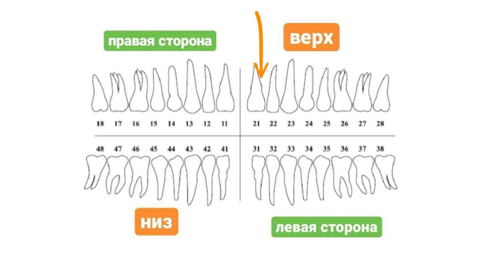
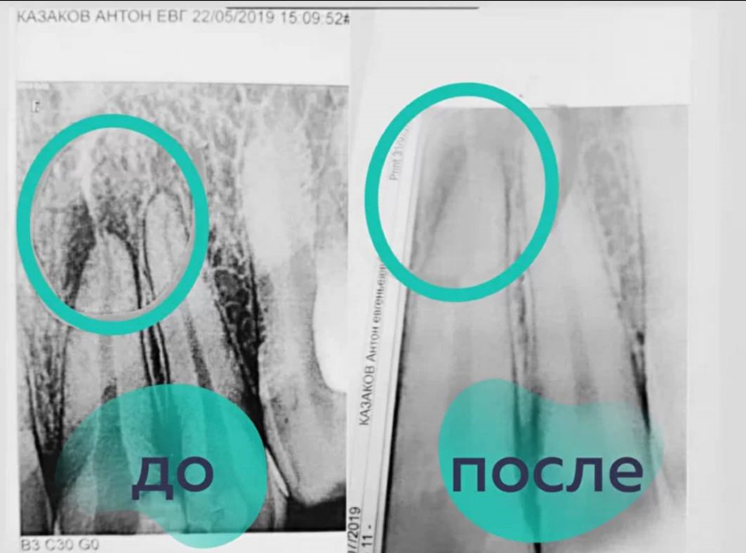
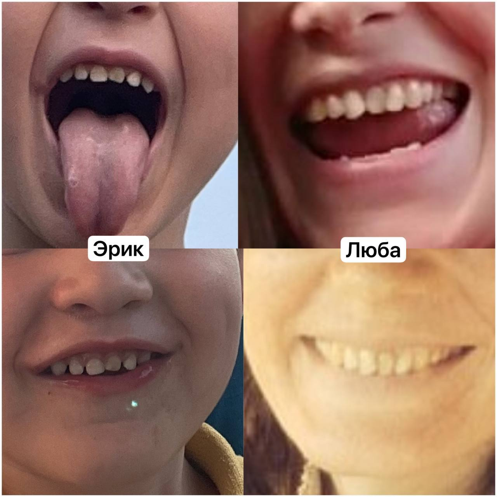
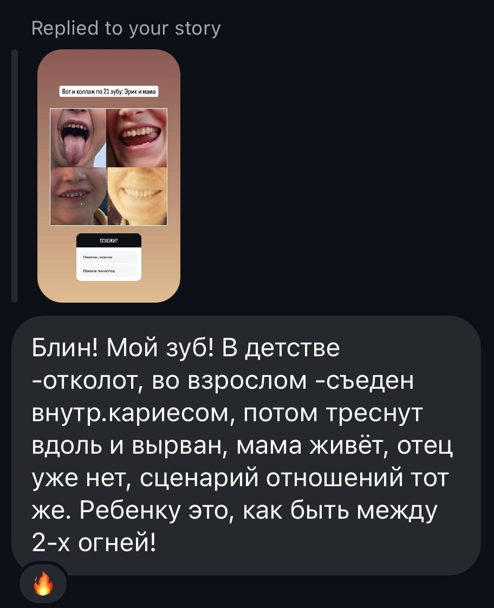
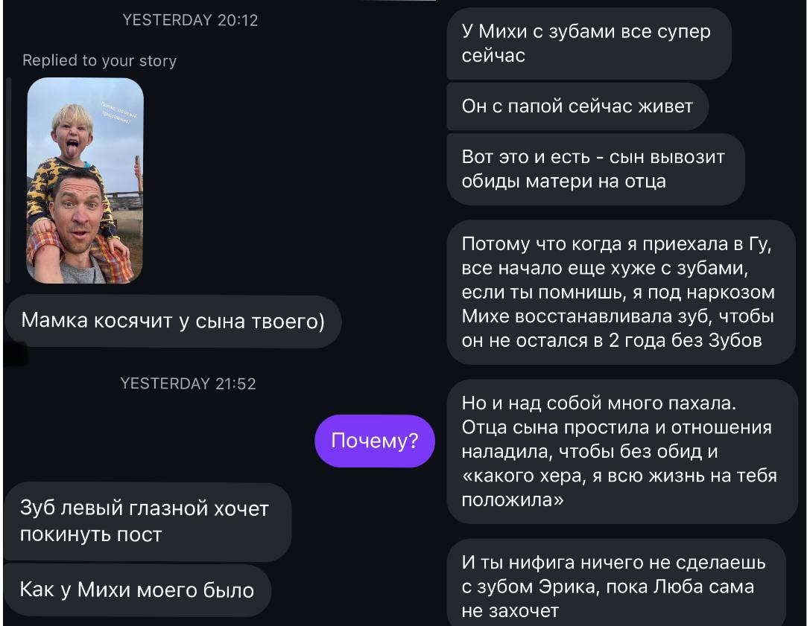

Страшная история 21 зуба. Папаша-то твой козлом был.

Прежде чем вы начнете читать...
- имейте ввиду, что статья написана обычным человеком с обычными эмоциями;
- вы в праве считать, что угодно;
- критику и прочую обратную связь я принимаю только от тех, кто проходил диагностику по зубам.
Если у вас есть проблемы с 21 зубом, перед прочтением статьи прошу Вас пройти опросник по этому зубу.
Если у вас есть проблемы с соседним центральным резцом, то эта статья также для вас актуальна, просто поменяйте папу и маму местами.
Привет. Меня зовут Казаков Антон и с 2018 меня в шутку называют психостоматологом. Сначала мне это не нравилось, а потом стало моим призванием. И привел меня к этому 21 зуб.

Именно его воспаление и предложенная стоматологом резекция (удаление) верхушки корня зуба как-то раз изменили мою жизнь и вдохновили пойти на обучение проработкам психосоматики.
Психосоматика, на сколько смогла, помогла мне. Резекцию отменили. Вослпаление уменьшилось. А чуть позже я стал создателем и руководителем исследования психологических способов регенерации зубных тканей в проекте Наука 2.0. Ещё позже у меня появился собственный проект по работе с зубами.
За время всего этого становления я наблюдал несколько историй по 21 зубу. Часть историй из профессиональной сферы, часть историй - из личной. Ими я и хочу сегодня поделиться.
Психосоматика, на сколько смогла, помогла мне. Резекцию отменили. Вослпаление уменьшилось. А чуть позже я стал создателем и руководителем исследования психологических способов регенерации зубных тканей в проекте Наука 2.0. Ещё позже у меня появился собственный проект по работе с зубами.
За время всего этого становления я наблюдал несколько историй по 21 зубу. Часть историй из профессиональной сферы, часть историй - из личной. Ими я и хочу сегодня поделиться.

Разница между снимками - примерно один месяц интенсивных проработок на тему "хорошего мальчика".
Если у вас также есть вопросы с 21 зубом или вы знаете тех, у кого они есть, то эта статья для вас. А самое главное, это статья для моего сына Эрика и всех мужчин, которые оплачивают лечение передних зубов своих детей.
😇 Проблема 21 зуба - это проблема "мамкиных угодников".
🔸 Что ждать от этих угодников и угодниц в жизни?
Угождание женшинам, гон на мужчин, которые женщинам не угождают и защиту деструктивного поведения женщин.
🔸 Что ждет этих угодников в жизни?
Их ждет пробуждающий опыт отношений по предательству своих "мамок". А в случае отказа от прохождения этого опыта:
- церебральная кастрация или ранняя смерть для мужчин
- или отношения по маминому паттерну с мужчиной для женщин.
Я бы и рад что-то смягчить в этом прогнозе, но увы... скоро вы и сам все поймете.
Посягательство на самое святое: кто вы и ваша мама?
Если вы умеете читать и у вас нет здорового 21 зуба, то ваша мама - это альфа жертва, которая гнала на вашего папу. Её же строгий взгляд или недовольство вами вы не можете выносить.
Если вы умеете читать, вы женщина и у вашего ребенка центральный верхний левый резец перестает быть здоровым, то альфа жертва - это вы. Вы мочите мужчин, которые вам не угождают. Подмачиваете так сказать их время от времени.
Если вы умеете читать, вы мужчина и у вашего ребенка первый левый верхний зуб нуждается в осмотре стоматолога, то для своей жены вы скорее всего нарцисс, лох и абьюзер.
Как-то раз я приехал из России в Таиланд, где жила моя бывшая жена с детьми, и офигел. За 5 месяцев моего отсутствия у моего сына Эрика центральный верхний левый зуб стал копией зуба своей мамы, моей бывшей жены, Любы. Сейчас на месте этого зуба у неё коронка. Она выбила его крючком от резинки, когда не получила валидации женщины, для которой старалась. В Россию я ездил для того, чтобы подать в суд на признание своего отцовства, жениться и успешно запустить обновленный проект по работе с зубами и коммуникацией.
На коллаже ниже можно увидеть как точно проблема переднего левого резца перешла от мамы к сыну.
На коллаже ниже можно увидеть как точно проблема переднего левого резца перешла от мамы к сыну.

Любина мама гнала на отца. Он умер, она продолжает жить. Моя мама гнала на отца. Он умер, она продолжает жить. Люба гонит на мужчин, которые ведут себя не так, как ей удобно. И я гнал на мужчин, которые доставляют женщинам дискомфорт. На этом мы и сошлись с ней, а потом на этом же и разошлись. Теперь она гонит на меня также, как гнала на первого мужа. Теперь я нарцисс, лох и абьюзер. И по моим наблюдениям это ждет всех, кто решает перестать быть хорошим для альфа-жертвы. Но если у вас есть опровержения - буду рад с ними познакомиться.
Став обладателем проклятия мамкиных угодников, Эрик рискует повторить мой путь: сначала найти себе женщину для которой он будет хорошим мальчиком и плохим мужчиной, а потом или превратиться в церебрально кастрированного котлетника, или просто поряньше умереть, запивая антидепрессанты алкоголем. Я проходил это и меня это цепляет. И как мужчину, и как отца, и как сына. Но я над этим как раз и работаю. Над тем, чтобы можно было регенерировать зубы и выстраивать счастливые отношения.

И пока мы с командой офигенно идем. Без зазрения совести отмечу, что наш проект школа коммуникации “Исцеление отношений” - это топчик.
В нем мы работаем со своими эмоциональными реакциями, благодаря которым мы капитулируем в сложной коммуникации и разрушаем свои зубы. Студенты школы сначала приходят к тому, что их не триггерит поведение близких, потом они учатся их понимать, а в конце - выстраивать конструктивную коммуникацию, укрепляющую долгосрочные отношения. Школа работает с ноября 2024 года, и за это время мы накопили контент.
Одним из этих контентов я хочу с вами поделиться. Это аудио компиляция из коммуникативных атак, которые тренера коммуникативной школы дают студентам по переднему резцу. В настоящее время по нему тренируюсь несколько человек, включая меня. Это те слова, посылы, выражения, в которых мы росли, жили и продолжали бы жить, разрушать 21 зуб и отношения, связанные с ним.
Прослушав эти посылы, вы поймете, что ни одна пломба, ни один винир, ни одна коронка никак не повлияют ни на то, как с нами обращаются другие люди, ни на то, как мы мыслим и оправдываем свои реакции. И это не только про 21 зуб.
😉 Только те, кто заботится о себе, о своих отношениях, об отношениях своих детей, идут отрабатывать эти триггеры в школу коммуникации. К стоматологам обычно обращаются те, кто заботится о фасаде отсуствия проблем в отношениях и хочет спрятать собственное наплевательское отношение к своему будущему.
Прослушав эти посылы, вы поймете, что ни одна пломба, ни один винир, ни одна коронка никак не повлияют ни на то, как с нами обращаются другие люди, ни на то, как мы мыслим и оправдываем свои реакции. И это не только про 21 зуб.
😉 Только те, кто заботится о себе, о своих отношениях, об отношениях своих детей, идут отрабатывать эти триггеры в школу коммуникации. К стоматологам обычно обращаются те, кто заботится о фасаде отсуствия проблем в отношениях и хочет спрятать собственное наплевательское отношение к своему будущему.
Осторожно, в видео присутствует нецензурная лексика (Если видео с Ютуба не загрузилось, то его можно посмотреть здесь)
Среда обитания 21 зубов
Итак, если вы то и дело слышите к себе что-то из подобного - можете задуматься о том, чтобы заглянуть на тренировки в Исцеление отношений. Но только если точно хотите снова обрести улыбку в отношениях. Если вас в отношениях все устраивает, то наблюдайте за зубами. С ними вас тогда тоже все должно устраивать. Не бывает такого, что с зубами не вау, а с отношениями вау. Между состояниями зубов и отношений - прямая корреляция. За каждым зубом свой паттерн.
За 21 зубом находится паттерн "мамкиного угодника". В нем присутствует беззвучная мольба в адрес альфа-жертвы: полюби, меня, полюби, я буду воевать со всеми, кто тебя отягощает! Даже с собой! Я Мамкин Угодник! Или угодница! Ниже - послание всем, кто принимает участие в этой вакханалии.
За 21 зубом находится паттерн "мамкиного угодника". В нем присутствует беззвучная мольба в адрес альфа-жертвы: полюби, меня, полюби, я буду воевать со всеми, кто тебя отягощает! Даже с собой! Я Мамкин Угодник! Или угодница! Ниже - послание всем, кто принимает участие в этой вакханалии.
Стоматологи, даже не знаю, в какой момент вам захочется начать доносить эту информацию до своих пациентов.. Можете давать ссылку на эту статью.
Мамы и особенно мамы мальчиков, вы же знаете:
1 как на ваши отношения с детьми повлияет то, что они рано или поздно увидят эту статью;
2 что по улыбке вашего ребенка будут говорить про вас те другие, кто рано или поздно прочитает эту статью;
3 что вы скажете своему ребенку, когда он будет несчастлив в отношениях;
4 что вы совсем не хотите, чтобы ваш сын либо стал пузатым пожирателем котлет, которым вечно недовольна жена, либо умер раньше, чем ваша невестка.
1 как на ваши отношения с детьми повлияет то, что они рано или поздно увидят эту статью;
2 что по улыбке вашего ребенка будут говорить про вас те другие, кто рано или поздно прочитает эту статью;
3 что вы скажете своему ребенку, когда он будет несчастлив в отношениях;
4 что вы совсем не хотите, чтобы ваш сын либо стал пузатым пожирателем котлет, которым вечно недовольна жена, либо умер раньше, чем ваша невестка.
Папы, если у вас хорошие зубы и много денег, отправляйте жену в трудовой онлайн лагерь “Исцеление отношений”. Если у вас тоже плохие зубы - заходите на бесплатную диагностику.
Если у ваших детей проблемы с 21, то надеюсь, что вы не Угождала Терпилович и ваша жена на вас не гонит. В противном случае наша скромная статистика говорит, что вам может помочь только чудо в виде внутреннего бунта, желания изменить свое будущее и годовой абонемент в школу коммуникации Исцеление отношений
Если у ваших детей проблемы с 21, то надеюсь, что вы не Угождала Терпилович и ваша жена на вас не гонит. В противном случае наша скромная статистика говорит, что вам может помочь только чудо в виде внутреннего бунта, желания изменить свое будущее и годовой абонемент в школу коммуникации Исцеление отношений
Резюме
Концепт того, что зубы связаны с отношенями перестает быть шуткой.
Работа с отношениями и коммуникацией - лучшая забота о здоровье своих зубов и зубов своих детей.
Психологи говорят, что отношения рушатся после 10 000 конфликтов. Это 2.5 напряженные непроговоренные ситуации в день в течение 10 лет.
По центральному верхнему левому зубу человека можно рассказать об отношениях его родителей, можно предсказать отношения, которые он будет строить и как в них закончит.
Работа с отношениями и коммуникацией - лучшая забота о здоровье своих зубов и зубов своих детей.
Психологи говорят, что отношения рушатся после 10 000 конфликтов. Это 2.5 напряженные непроговоренные ситуации в день в течение 10 лет.
По центральному верхнему левому зубу человека можно рассказать об отношениях его родителей, можно предсказать отношения, которые он будет строить и как в них закончит.
Совет тем выросшим детям, у кого проблемы с 21 зубом и чей отец все ещё жив. Хотите изменить свой зуб и перспективы в отношениях - задумайтесь о том, чтобы начать радовать своего папу, а не маму. И как минимум узнайте его историю о том, как ему было в отношениях с ней.
Одним из решений по переднему левому резцу у детей может быть то, что сделала наша общая с Любой знакомая, которая поделилась своей историей в инстаграме. У нее получилось. Но как часто родители надеятся, что кореные зубы вырастут здоровыми, а там снова кариес?

☝ … или он сам не захочет. Никогда не знаешь, когда захочется поработать с зубами через коммуникацию и отношения. В исцелении отношений уже есть клуб людей, которые работают с 21 зубом над своей коммуникацией и реакциями лимбической системы. Его двери всегда открыты.
Заключение
Дорогой читатель, как ты понимаешь, в ближайшие годы произойдет несколько вещей:
Если у вас появятся проблемы с зубами — приходите на диагностику, заходите в канал Психостоматологии №1 в телеграме, читайте статьи на сайте и приходите работать с коммуникацией и отношениями. Вы всегда можете вернуться к привычному пути и снова пойти к стоматологу. Но хотите ли вы продолжать платить все больше за лечение одних и тех же проблем, или готовы наконец заглянуть глубже?
С ответом можно не торопиться. Лучше почитать следующий пост о бесконечной битве зла с добром. 👈
- Люди начнут видеть правду через зубы. Помнишь, как у тебя болел зуб после последней ссоры? Это не совпадение. Здоровье полости рта станет зеркалом отношений. И никакие красивые слова не смогут скрыть реальность, когда у детей проблемы с передними резцами. В культуру войдет понимание того, что показывать стоматологу нужно не только зубы, но и свои отношения.
- Ваши дети поймут, откуда ноги растут у их проблем в отношениях и реализации. Представь: взрослый человек, глядя на историю своих стоматологических проблем, впервые увидит полную картину своего детства и своих перспектив в отношениях и реализации. Это сейчас статья всего по одному зубу, но исследования продолжаются и со временем мы будем рассказывать и о других зубах.
- Изменится подход к выбору партнеров. Что проще: годами терпеть отношения с человеком, который разрушает не только свои зубы, но и твои нервы, или сразу замечать предупреждающие знаки? Люди научатся видеть за историями об "ужасных бывших" собственные неразрешенные конфликты, отпечатанные на зубах рассказчика. Уже сейчас я не завидую мужчинам, чьи спутницы имеют проблемы с 21 зубом. Если вы - это он, то приходите в клуб поддержки в телеграме.
- Психостоматология станет мостом между медициной и психологией. Бесконечное лечение одних и тех же зубов без работы с отношениями станет восприниматься так же странно, как попытка бесконечно менять шины, не желая чинить подвеску. Те, кто интуитивно чувствовал эту связь, получат научное подтверждение своим наблюдениям.
- Родится новое поколение людей, берущих ответственность за свое здоровье. Сначала будет сопротивление. Всегда проще поверить в "плохие гены" или "некачественные пломбы", чем признать несовершенство своих отношений. Но рано или поздно усталость от постоянных проблем перевесит страх изменений, и люди потянутся к источникам знаний о связи зубов и отношений.
- Родительство обретет новое измерение ответственности. Представьте себя через 10 лет: ваш ребенок понимает, что его проблемы с зубами — отражение вашего стиля общения с ним и другими. Хотите ли вы, чтобы он смотрел на вас с благодарностью за здоровье или с обидой за переданные деструктивные паттерны?
- Профессиональные сообщества начнут включать понимание взаимосвязей. В проекты, где важна эмоциональная устойчивость и умение решать конфликты, будут более внимательно относиться к людям с признаками хронических проблем с зубами. Не из-за дискриминации, а из понимания, что нерешенные внутренние конфликты влияют на все сферы жизни.
- Люди обретут новый способ самопознания. Когда ваш зуб в следующий раз даст о себе знать, вместо привычной реакции "опять к стоматологу" вы зададите себе вопрос: "А что происходит в моих отношениях?" И этот вопрос может стать началом глубокой трансформации не только вашей улыбки, но и вашей жизни.
Если у вас появятся проблемы с зубами — приходите на диагностику, заходите в канал Психостоматологии №1 в телеграме, читайте статьи на сайте и приходите работать с коммуникацией и отношениями. Вы всегда можете вернуться к привычному пути и снова пойти к стоматологу. Но хотите ли вы продолжать платить все больше за лечение одних и тех же проблем, или готовы наконец заглянуть глубже?
С ответом можно не торопиться. Лучше почитать следующий пост о бесконечной битве зла с добром. 👈
Миссия Психостоматологии на ближайшее время: вынести понимание связи зубов и отношений на уровень повседневной осознанности. И повлиять таким образом на культуру построения отношений и работы с зубами.
Захотите увидеть, как команда Психостоматологии №1 будет это делать - присоединяйтесь к нашему телеграм каналу ❤
Захотите увидеть, как команда Психостоматологии №1 будет это делать - присоединяйтесь к нашему телеграм каналу ❤